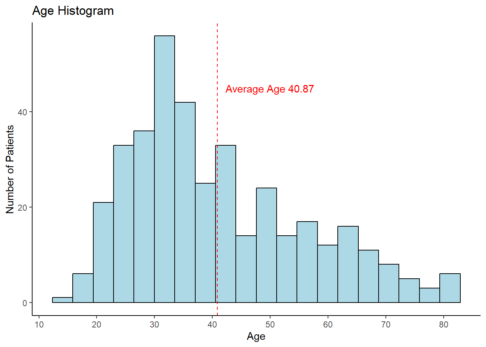
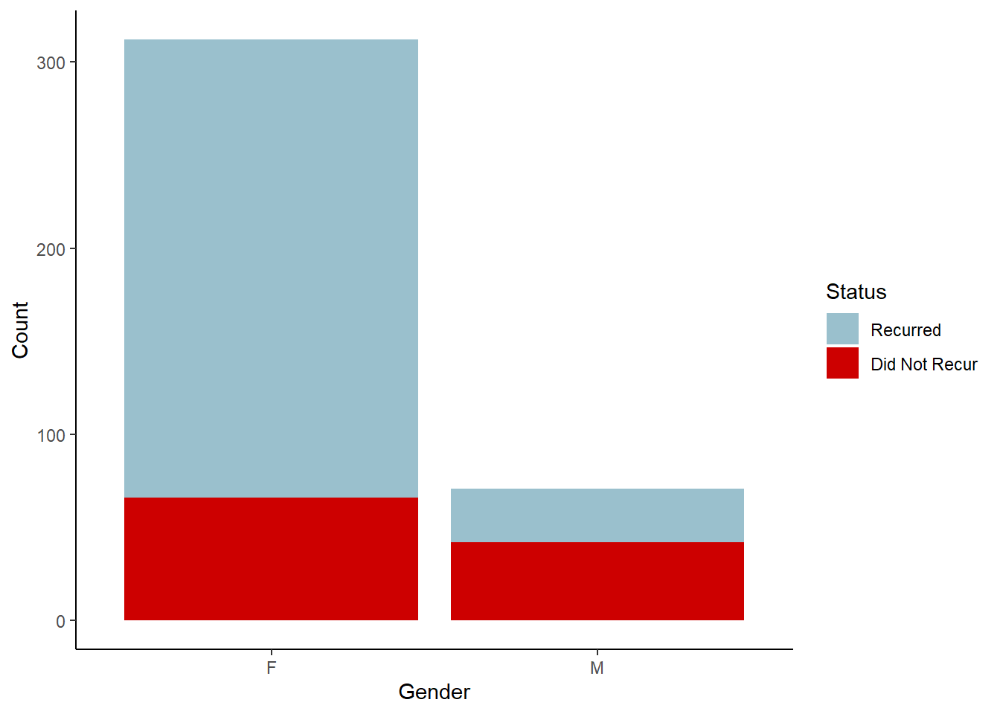

This dataset focuses on thyroid cancer recurrence after Radioactive Iodine (RAI) therapy. It contains 383 patient records with 13 key attributes. This data will be used to build predictive models for future cancer recurrence using logistic regression, random forest, and XGBoost.
Column Descriptions:
Age : Age of the patient (in years).
Gender : Patient’s gender (Male or Female).
Hx Radiotherapy : History of prior radiotherapy (Yes or No).
Adenopathy : Presence of lymph node involvement (Yes or No).
Pathology : Type of thyroid cancer (e.g., Micropapillary).
Focality : Tumor focality (Uni-Focal or Multi-Focal).
Risk : Cancer risk classification (Low, Intermediate, High).
ggplot(thyroid_data, aes(x = Age)) +geom_histogram(bins =20, fill ="lightblue", color="black") +scale_x_continuous(breaks =seq(10, 90, by =10)) +labs(title ="Age Histogram", x ="Age", y ="Number of Patients") +geom_vline(xintercept = mean_age, color ="red", linetype ="dashed") +annotate("text", x =50, y =45,label =glue("Average Age {round(mean_age, 2)}"), color ="red")

The histogram shows the age distribution of the patients.
gender_counts <- thyroid_data |>count(Gender, name ="total")total_pt <-nrow(thyroid_data)glue("The percentage of female patients: {round(gender_counts[1,2]/total_pt * 100, 2)}%\n The percent of male patients: {round(gender_counts[2,2]/total_pt * 100, 2)}%")
The percentage of female patients: 81.46%
The percent of male patients: 18.54%
What are the recurrence rates based on gender?
recurred_sum <- thyroid_data |>summarize(recurred_sum =sum(as.numeric(Recurred)-1), .by = Gender)recurred_graph <-right_join(recurred_sum, gender_counts, by ="Gender") |>mutate(no_recurred = total - recurred_sum)recurred_graph1 <- recurred_graph |>pivot_longer(cols =c(recurred_sum, no_recurred),names_to ="Status", values_to ="Count")ggplot(recurred_graph1, aes(x = Gender, y = Count, fill = Status)) +geom_col() +scale_fill_manual(values =c("recurred_sum"="red3", "no_recurred"="lightblue3"),labels =c("Recurred", "Did Not Recur"))

About 81% of patients are female and 19% are male. The bar chart reveals that male patients have a higher recurrence rate than females, suggesting gender might be an important predictor.
The data is split into 80% for training and 20% for testing. Since recurrence happens in about 40% of cases, the split is stratified on the Recurrence feature to preserve class balance. The random split looks balanced between the test and training set when checked on the Age feature.
Male gender and treatment response levels are statistically significant predictors of thyroid cancer recurrence. Male patients have approximately 11 times higher odds of recurrence compared to female patients, holding all other variables constant. Additionally, patients with excellent and intermediate responses to treatment have a less than 1% chance of cancer recurrence.
This plot shows which features most strongly influence predictions in the xgboost model.
Validation
The validation process employs 10-fold cross-validation to assess model performances. This approach splits the training data into 10 subsets, trains the model on 9 fold, and evaluated on the last remaining fold. The process is repeated 10 times, ensuring that each data point is used for both training and validation. Cross training helps mitigate overfitting.
Confusion Matrix for logit :
Truth
Prediction No Yes
No 55 3
Yes 0 19
Confusion Matrix for rf :
Truth
Prediction No Yes
No 54 0
Yes 1 22
Confusion Matrix for xgboost :
Truth
Prediction No Yes
No 54 0
Yes 1 22
This plot helps identify which model performed best on each metric.
Conclusion
This analysis explored the prediction of thyroid cancer recurrence following Radioactive Iodine (RAI) therapy using logistic regression, random forest, and XGBoost. After evaluating model performance with cross-validation and multiple metrics (F1 score, ROC AUC, Brier score, and Matthews Correlation Coefficient), all three models demonstrated reasonable classification ability, with differences in performance depending on the metric used.
Logistic regression revealed that male gender and treatment response were statistically significant predictors of recurrence. Specifically, male patients had approximately 11 times higher odds of experiencing cancer recurrence compared to female patients, when controlling for other variables. Patients who showed an Excellent or Indeterminate response to treatment had substantially lower odds of recurrence, less than 1% of the odds compared to the reference group.
Among the models, random forest showed the strongest predictive performance. However, model selection should be informed by the context in which predictions are used. For example, in clinical settings, minimizing false negatives may be more critical than overall accuracy.
Limitations of this study include a moderate sample size (n = 383) and some class imbalance between recurrence outcomes. Future work could benefit from external validation using a separate dataset, incorporating additional clinical variables, and potentially using ensemble methods or calibration techniques to refine probability estimates.
In summary, predictive modeling can provide valuable support in identifying patients at higher risk of recurrence, aiding clinicians in tailoring follow-up strategies and treatment plans more effectively.